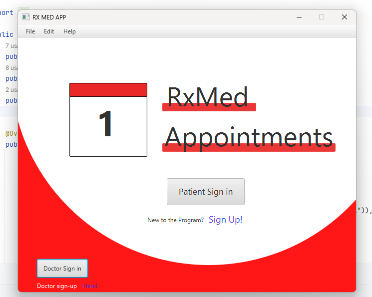
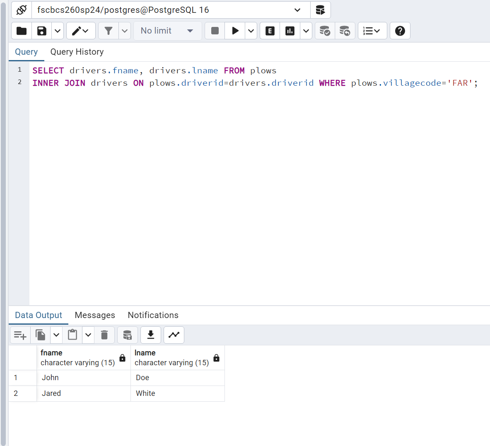

Dedicated college student pursuing a degree in Computer Programming and Information Systems, with a strong interest in IT support and software development. Successfully completed a helpdesk internship, gaining hands-on experience in troubleshooting technical issues, providing user support, and implementing IT solutions. Proficient in programming languages such as JAVA, SQL, C# with a solid understanding of software development principles and methodologies. Actively involved in projects related to web / desktop application development, demonstrating problem-solving abilities and attention to detail. Eager to apply academic knowledge and internship experience to contribute effectively to software development initiatives in the IT industry.
HTML * CSS * JAVASCRIPT * JQUERY * PHP * JAVA * C# (C SHARP) * SQL * POSTGRESQL
RXMED

Programming languages: JAVA FIREBASE / FIRESTORE
Doctors Appointment The Doctors Appointment Software is an application meant for both Patients and doctors where the patients will have access to see their prescription, and doctors can set up appointments and they can see who they are visiting and send them their prescription information. This application will feature user friendly UI for the patients aiming towards Senior citizens or patients with a disability.
TOWNCONNECT

Programming languages: SQL POSTGRESQL
TownConnect is a SQL / POSTGRESQL project that ont only demonstarate the CRUD (CREATE READ UPDATE DELETE) functionality of SQL but also simulates a real world snow plowing business such that users (employees) can see drivers plowing records and add residence to the database.